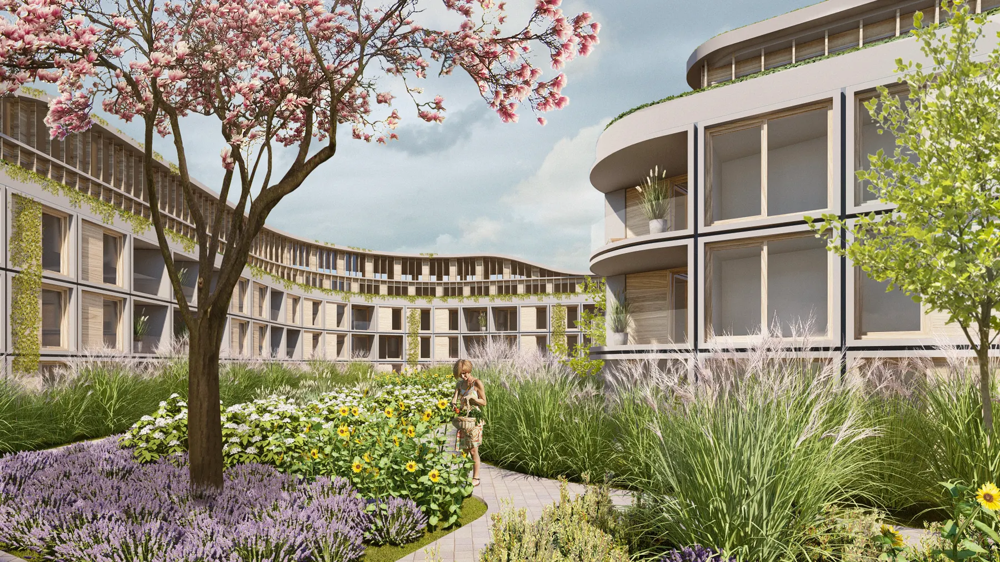
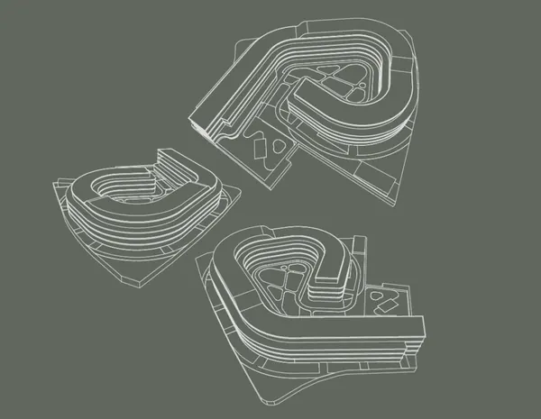
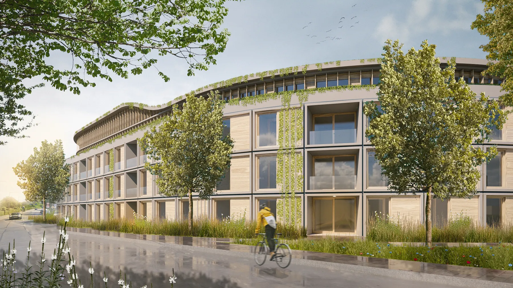
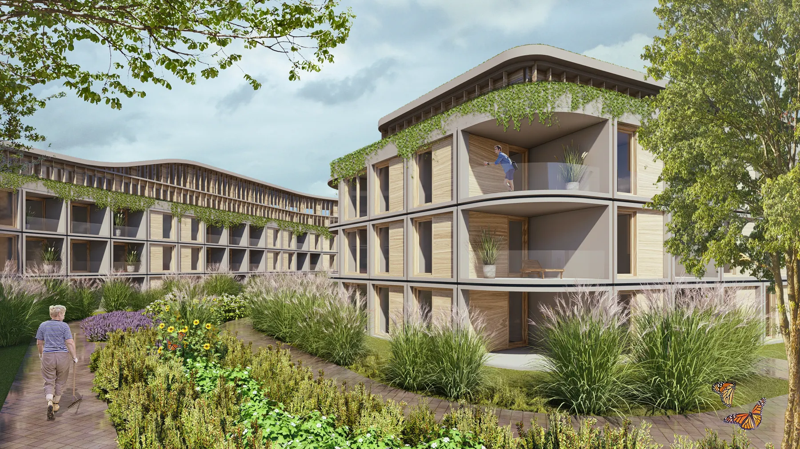

Alle Kräfte im Team gebündelt und gewonnen: Unser Konzept "Herbarium, Pasing" hat überzeugt! Im aufstrebenden Münchner Stadtteil Pasing entsteht das Stadtquartier …
Herbarium, Pasing
Alle Kräfte im Team gebündelt und gewonnen: Unser Konzept "Herbarium, Pasing" hat überzeugt! Im aufstrebenden Münchner Stadtteil Pasing entsteht das Stadtquartier "Herbarium" - ein einzigartiges Quartier im Einklang mit Mensch und Natur.
NEUer Raum, neue Visionen!
Die von einer Weinbergschnecke inspirierte Form umschließt ein Areal voller Potenzial. So schafft das geplante Quartier nicht nur Wohnraum, sondern stellt auch eine Verbindung zu Geschichte und Natur her. Bevor wir uns an die Arbeit machten, haben wir die Geschichte des Pasinger Kräutergartens „ausgegraben“. Der Genius Loci dieses Ortes beflügelt uns, Traditionelles modern zu interpretieren. Ganzheitlich denken für Mensch, Tier und Natur! „Grün“ im Innenhof verbessert nicht nur die Umwelt, sondern baut auch Stress ab und fördert das Gemeinschaftsgefühl.
Competition
Willkommen im Herbarium: Das grüne Stadtquartier in Pasing
Im Herbarium Pasing wird Nachhaltigkeit groß geschrieben – eine harmonische Verbindung von Natur und modernem Lebensstil! Die modulare Bauweise bricht Komplexität auf und fördert die Anpassungsfähigkeit. In dieser Welt des nachhaltigen Bauens spielt jedes Puzzleteil eine Rolle.
Nachhaltigkeit als gestaltungsprinzip
Eine holistische Version für Mensch, Tier und NATUR
Glück kann man pflanzen. Die Farbe Grün und alles was sich damit assoziiert, spielt eine entscheidende Rolle für ein Quartier mit dem klingenden Namen „Herbarium“. Das innere Grün in den Ruhezonen, der Bewohnerschaft produziert Sauerstoff, reinigt die Luft, verbessert da Mikroklima. Psychologisch betrachtet wirken Grünflächen stressreduzierend, fördern die körperliche Aktivität und dienen als Treffpunkt für Gemeinschaftsaktivitäten.

dAS ECKIGE MUSS INS RUNDE
Die modulare Bauweise des Herbariums bricht Komplexität auf und fördert die Anpassungsfähigkeit. Jedes Puzzleteil spielt eine Rolle in dieser Welt des nachhaltigen Bauens.

harmonische Verbindung von Natur und modernem Lebensstil
„Grün“ im Innenhof verbessert die Umwelt, baut Stress ab und fördert das Gemeinschaftsgefühl. Das Herbarium Pasing setzt auf Nachhaltigkeit und schafft eine harmonische Verbindung von Natur und modernem Lebensstil.

Gestalten für die Zukunft - Unsere Version für DAS herbarium pasing
In unserem Entwurf spiegelt sich unsere Beziehung zur Natur und unsere Verantwortung für nachfolgende Generationen wider. Die Verwendung von Holz und eine durchdachte Integration von Grünflächen in unsere Lebensräume sind nicht nur ästhetische Entscheidungen, sondern auch Ausdruck unserer tiefen Verbundenheit mit der Umwelt und dem Menschen.
Die hybride Bauweise, die Nachhaltigkeit und Resilienz vereint, erinnert uns daran, dass wir Teil eines größeren Ganzen sind und das unsere Handlungen Auswirkungen auf die Welt und um das herum haben. Sie verkörpert die Hoffnung auf eine harmonische Koexistenz von Mensch und Natur, in der wir nicht nur für unseren eigenen Komfort, sondern auch für das Wohlergehen zukünftiger Generationen sorgen.
Neuer Raum, neue Visionen! Im aufstrebenden Münchner Stadtteil Pasing entsteht das einzigartige Stadtquartier „Herbarium“. Inspiriert von der Weinbergschnecke, umschließt das Quartier ein Areal voller Potenzial.
Wohnen: 1–4-Zimmerwohnungen (148 Einheiten) Quartierbezogene Funktionen: Nahversorgung, kleinteilige Dienstleistungen, Gemeinschaftsflächen Gemeinschaft & Begegnung: Innenhöfe, grüne Wege, Treffpunkte für Bewohner:innen Nachhaltigkeit als Prinzip: Grünflächen für Mikroklima, Sauerstoffproduktion, Stressabbau; ESG-konforme Strukturen
Wir haben ihr Interesse geweckt? Sie haben Fragen oder wollen einen Termin mit uns vereinbaren? Dann hinterlassen Sie uns bitte eine Nachricht.
Wenn Sie uns eine Nachricht per Kontaktformular senden, so erheben, speichern und verarbeiten wir Ihre Daten nur, soweit dies für die Abwicklung Ihrer Anfragen und für die Korrespondenz mit Ihnen erforderlich ist. Hier finden Sie unsere Datenschutzerklärung.
Hinweis: Leider können wir aufgrund aktueller betrieblicher Umstände derzeit keine Schülerpraktika anbieten. Wir hoffen auf Ihr Verständnis und stehen für zukünftige Möglichkeiten gerne zur Verfügung. Vielen Dank.
Brückner Architekten GmbH Gabriel-Max-Straße 4 81545 München
BRÜCKNERINNEN Interior
REON Realisierung
PROPERTYMAX Maximales Baurecht
TGA Süddeutschland GmbH
Rendeffect GmbH
Wir haben IhrInteresse geweckt?
Sie haben Fragen oder wollen einen Termin vereinbaren?